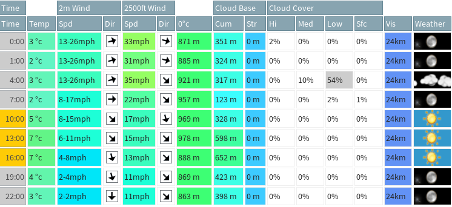
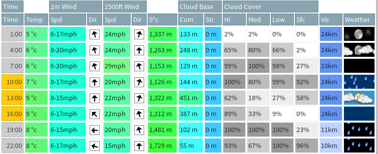

There's plenty of websites that you can use but you should use a website or app that gives you detailed wind and cloud information. XC Weather offers a concise report that is detailed enough for skydiving. Ideally, you will want a more comprehensive report for example Met Check's Skydiving page which offers more detailed information including the winds aloft, cloud base, and 0°C point.
Cloud: If there's lots of cloud, we can't see where we are going whether be it in the aircraft, in freefall, or under canopy. Clearer days are preferrable but in the UK we seldom get those, so often cloud won't stop us so long as it's not blanket cover (close to 100%).
Cloud Base: Cloud isn't always a sign we shouldn't jump. If the cloud base is high (above the height we'll be tracking and deploying/flying our parachutes, 4000-7000ft) it poses less of a problem. For static line students, on a cloudy day you may have the chance to jump because you'll be exiting at ~4000ft and you may well be jumping underneath the cloud! The higher the cloud base, the better.
Wind: The limit for students to jump is 15 knots which is about 18mph. We typically look at gusts, since gusting winds are what will determine if we can jump or not. Be sure to check the ground winds and winds at altitude as well (Met Check will show you 2500ft winds).
Precipitation: We'll never jump when it's raining, snowing, or hailing. If it's raining all day you probably won't be jumping. However, landing on a wet runway or snowy field has never stopped anyone! So if it's raining in the morning and clears up in the afternoon it's no problem.
Temperature: How many layers should I be wearing? Met Check will show you the altitude where the temperature hits 0°C. If the zero point is at, say, 1000m (~3000ft), it's certainly going to be cold at 15000ft! The higher the zero point, the warmer it's going to be at the top. A general rule of thumb is -3°C per 1000ft increase in altitude on a clear day, from the ground temperature.

This is an example of a close-to-perfect day as seen on Met Check. The winds are under the student limits on the ground and a little bit higher (but still jumpable) at 2500ft. It's a clear day with 0% cloud cover and no rain. It's a bit chilly - but that shouldn't stop you.
 At first glance this looks to be a terrible day - it's cloudy, rainy, and windy. Rain is certainly a non-starter for jumping, so we'll focus our attention on the early afternoon (13:00 in the image). The cloud clears a bit and the rain stops, the winds at 2500ft are 22mph which is above student limits but not so high to put us off completely - there's a good chance the winds could be lower on the day. You probably wouldn't want to travel to the dropzone for a day like this, but if this was a Sunday and you were planning on going on Saturday because that's a great day, it would certainly be worth staying another night to see how Sunday's weather pans out.
Weather reports are inaccurate. If it's a bit too cloudy or a bit too windy don't let it put you off completely, more often than not it's worth chancing the weather when it looks less than ideal. Don't hold out for perfect weather, if you do, you'll never be jumping!
Remember: If you're not at the dropzone, you can't jump! No matter what the weather is like.